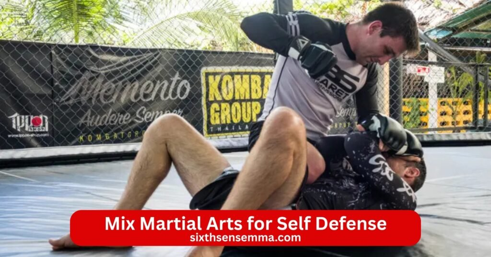
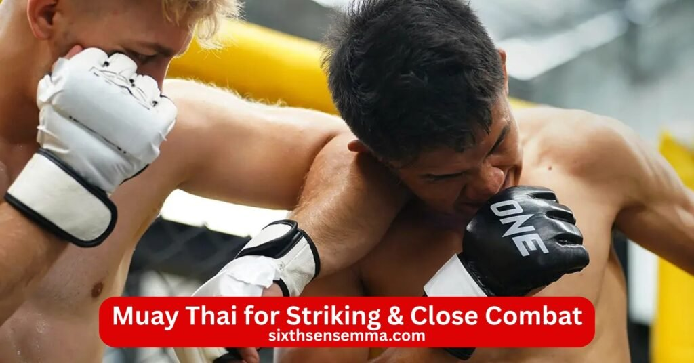
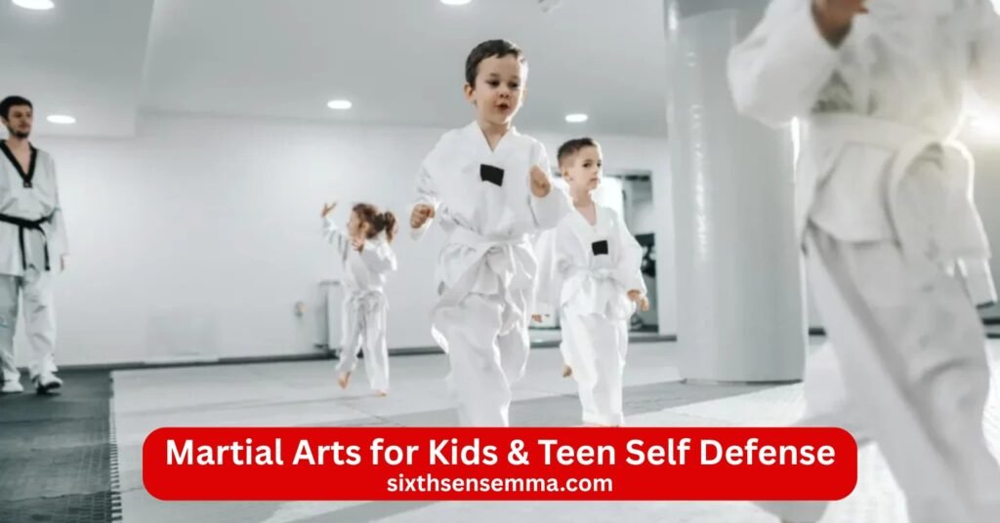

Best Mix Martial Arts for Self Defense Complete Training & Service Guide by Sixth Sense MMA

Best Mix Martial Arts for Self Defense help you pick the right style that actually stops threats when it counts in real life. Whether you face a sudden grab a wild punch or a close clinch the best martial art for self defense uses simple direct actions to neutralize an attacker fast and get you out safely. Sixth Sense MMA teaches proven effective self defense styles like krav maga brazilian jiu jitsu muay thai boxing wrestling and mixed martial arts with focus on real world self defense not just sport rules or fancy forms.
Best Martial Arts for Self Defense by Sixth Sense MMA
Best Martial Arts for Self Defense come down to what actually works when you face an attacker in a street fight or self defense situations. Sixth Sense MMA teaches styles that focus on real world self defense where speed surprise and control matter most. Effective self defense styles use simple actions to neutralize threats fast whether the fight stays standing or goes to the ground. Many people search for the best fighting style self defense because martial arts are created equal does not hold true. Some popular martial arts shine in sport while others deliver in real world scenarios. At Sixth Sense MMA the focus stays on practical self defense arts that build self defense skills for everyday life.
Why Choosing the Right Martial Art Matters
Choosing the right martial art changes everything in a sudden attack. The best martial art for self defense matches your body type daily life and real threats you might face. A weaker person needs an art for self defense that uses opponent’s force against them through redirect an opponent’s force or using an opponent’s force. Martial art emphasizes technique over strength so emphasis on technique over strength lets smaller people handle larger opponents. Evaluating martial arts means looking at how well they handle unpredictable situations multiple attackers or weapons.
Self Defense vs Sport Martial Arts
Self defense vs sport martial arts shows clear differences on the street. Sport versions like competitive karate taekwondo or rules based judo score points with clean moves and safe rules. Self defense martial art drops those limits to focus on ending fights fast. Striking arts in sport avoid dirty targets while real world self defense hits vulnerable spots to neutralize threats. Grappling arts in competition chase submissions for victory but martial arts for self defense use takedowns joint locks and ground control to escape or control then leave. Traditional martial arts build form and discipline yet modern self defense adds pressure testing against resisting opponents. Sixth Sense MMA bridges both by teaching effective martial skills that work beyond the ring.
Krav Maga for Real World Self Defense
Krav Maga ranks high among top self defense martial arts because it was built for real world self defense scenarios. This self defense system comes from military needs so every move aims to stop danger immediately. Krav maga vs bjj self defense often favors krav for standing fights with multiple opponents since it mixes striking techniques elbow punch and quick escapes. Krav maga trains against grabs chokes and weapons in ways that feel chaotic like actual attacks. The style keeps training aggressive and instinctive so you respond without hesitation. Self defense for beginners finds krav easy to pick up because techniques stay basic yet brutal when needed.
Street Fight & Real Life Attack Training
Street fight & real life attack training in krav maga repeats messy scenarios over and over. Students face surprise grabs punch combos or ground attacks while tired or in low light. Self defense fighting techniques include eye gouges groin strikes and head butts when rules disappear. Krav maga drills teach you to control opponents long enough to break away and run. Multiple attackers get addressed through fast positioning and using one person as a shield. Real world encounters demand awareness of exits and objects around you so training includes environmental use. Practical self defense here means ending the threat in seconds not minutes.
Who Should Choose Krav Maga Training
Who should choose krav maga training includes people who want fast results in self defense situations. Busy adults women facing street risks security workers or anyone short on time pick krav maga because classes focus on usable skills right away. If you worry about multiple attackers or unpredictable weapons krav maga gives direct answers. Best for self defense seekers who prefer standing fights over long ground work often lean here. Sixth Sense MMA offers krav maga sessions that build fighting ability through realistic pressure so you walk away ready. B
Brazilian Jiu Jitsu (BJJ) for Self Defense
Brazilian Jiu Jitsu ranks high among top self defense martial arts because it turns fights to the ground where control beats size. BJJ focuses on brazilian jiu jitsu principles that let a smaller or weaker person neutralize a bigger attacker through smart positioning and submission. Self defense martial arts ranking often places bjj near the top for real world self defense since most street fights end up close and tangled. Brazilian style emphasizes ground control joint locks and submission holds that finish fights without needing to stand and trade blows. Martial art for self defense like bjj teaches you to survive when an opponent takes you down or you choose to bring them there.
Ground Fighting & Control Techniques
Ground fighting & control techniques form the heart of bjj self defense. Students learn to escape bad spots like mount or back control then reverse to top positions where they dictate the fight. Ground control uses body weight and hips to pin an attacker while hands stay free to block or strike. Joint locks target arms shoulders wrists or legs with slow pressure that forces taps or breaks resistance. Submission moves like armbars chokes and leg locks end threats quickly once position locks in. Takedowns from standing lead straight to these spots so bjj chains everything together.
Self Defense Benefits for Men & Women
Self defense benefits for men & women shine in brazilian jiu jitsu because the art relies on emphasis on technique over strength. Women gain huge advantages against larger opponents by redirecting power instead of matching it. Martial arts self protection through bjj builds confidence since you know escapes and finishes work even when tired or surprised. Krav maga vs bjj self defense debates often highlight bjj for one on one ground fights while krav handles standing chaos better. Both genders practice together in safe settings so everyone learns to handle grabs pins or takedowns.

Muay Thai for Striking & Close Combat
Muay Thai stands as one of the best martial arts for self defense when fights stay on the feet and space closes fast. Known as the art of eight limbs muay thai uses fists elbows knees and shins for powerful damage up close. Muay thai self defense excels in close combat because it turns every body part into a weapon while building tough conditioning. Striking arts like this deliver fast stops in street fight moments where you cannot afford long exchanges. Effective self defense comes from sharp striking techniques that create distance or finish threats before they grab you.
Powerful Strikes Using Elbows & Knees
Powerful strikes using elbows & knees make muay thai deadly in tight spaces. Elbows slice across faces or cut through guards with short sharp arcs that open cuts and stun fast. Knees drive upward into midsection thighs or head when an attacker clinches or bends forward. Elbow and knee work trains you to stay balanced while delivering force from odd angles. Punch combos set up these close tools so you flow naturally from boxing range to clinch range. Self defense fighting techniques include checking kicks then countering with knee lifts or elbow spins. Muay thai builds hard shins through pad work so leg kicks hurt the opponent more than you.
When Muay Thai Is Best for Self Protection
When muay thai is best for self protection comes down to scenarios where you stay on your feet and control distance. If threats involve single attacker pushing or swinging wild muay thai lets you box clinch knee the body or elbow the head to end it quick. Multiple opponents situations favor muay thai because fast strikes create space to move or escape. Best fighting style self defense picks muay thai when you want standing dominance without going to ground where multiple attackers become harder. Practical self defense here means toughening your body and mind through hard sparring so you stay composed.
Boxing for Fast & Practical Self Defense
Boxing ranks among the top self defense martial arts for quick sharp responses in real world self defense because it trains fast hands and smart defense without complicated rules. Boxing self defense focuses on clean punch delivery distance management and avoiding damage so you stay in control during sudden attacks. Effective self defense styles like boxing keep things simple with just fists elbows and footwork making it one of the best fighting style self defense options when fights stay standing. Martial arts for self defense in boxing build reflexes that react to attacker swings or grabs before they land.
Punching Accuracy & Head Movement
Punching accuracy & head movement make boxing deadly practical for self defense situations. Jab cross hook and uppercut drills sharpen punch placement so every strike lands on weak spots like chin nose or body. Box training repeats combinations until they fire automatically under stress. Head movement slips bobs weaves and rolls let you dodge punch or grabs while staying close enough to counter. Self defense training tips teach slipping a wild swing then firing a straight punch to stun the opponent. Striking techniques in boxing use body rotation and hip snap for power without overcommitting.
Boxing as a Beginner Friendly Self Defense Skill
Boxing as a beginner friendly self defense skill attracts people new to martial art because basics come fast and results show quick. Self defense for beginners starts with stance footwork jab and basic guard then adds defense layers. No need for years of forms or complex submission chains just consistent practice on bags pads and light sparring. Best martial art for self defense seekers pick boxing since it improves timing coordination and toughness right away. Emphasis on technique over strength lets smaller people land clean shots on larger opponents. Sixth Sense MMA classes make boxing accessible with patient coach guidance so anyone builds fighting ability without feeling lost.
Wrestling for Physical Control & Balance
Wrestling stands strong in self defense martial arts ranking because it masters body control balance and position no matter the size difference. Wrestling teaches how to grapple stay on your feet or take fights down safely so you dictate where and how the fight happens. Martial art for real world like wrestling uses leverage and pressure to control opponents and limit their options. Effective martial art here focuses on takedowns clinch work and pinning rather than fancy strikes. Self defense martial training in wrestling builds unbreakable base and feel for an attacker movement.
Takedown Defense & Body Control
Takedown defense & body control keep you standing when someone tries to grab or drive through. Wrestling drills teach sprawling dropping hips low and sprawling legs back to stuff shots. Once in a clinch underhooks overhooks and pummeling maintain balance while you counter or off balance the opponent. Body control uses weight distribution and grips to tire the attacker or set up your own takedowns. Joint locks and throws appear less but body locks trips and body slams control the fight flow. Self defense techniques include breaking grips spinning to the back or forcing the opponent against a wall for advantage.
Why Wrestling Helps in Real Street Situations
Why wrestling helps in real street situations comes from its focus on close messy fights where grabs clinches and ground work happen fast. Real world self defense scenarios often involve multiple opponents or slippery surfaces so wrestling teaches you to stay balanced avoid being taken down and escape holds quick. Neutralize threats by controlling posture or dumping someone hard then standing back up to face others. Ground control from wrestling lets you pin one person while watching surroundings. Martial arts self protection through wrestling works against untrained attacker who rely on wild swings or tackles.
Mixed Martial Arts (MMA) for Complete Self Defense
Mixed Martial Arts tops many self defense martial arts ranking lists as the best martial arts for self because it pulls the strongest parts from every style into one complete system. MMA combines striking from boxing muay thai and kickboxing with grappling from bjj wrestling and judo so you handle any range or situation. Best martial art for self defense seekers choose mma when they want no gaps in skill set. Effective self defense styles like mma prepare you for standing fights clinches ground work and transitions between them all. Martial art for real world fights shines here since real attacks mix punches grabs takedowns and chaos without rules.
Combining Striking & Grappling Skills
Combining striking & grappling skills creates the real power of mma for self defense situations. Standing you use punch elbow knee and kicking techniques from muay thai or boxing to keep distance or stun an attacker. When distance closes mma flows into clinch work with underhooks knees and trips. Takedowns from wrestling bring the fight down where brazilian jiu jitsu takes over with ground control joint locks submission and escapes. Striking and grappling chain together so you strike to set up a takedown or defend a grab then strike from top position. Self defense fighting techniques in mma teach seamless switches that match unpredictable situations better than single style training. Practice against resisting partners builds the feel for when to strike grapple or escape.
MMA Training for Realistic Self Defense Scenarios
MMA training for realistic self defense scenarios uses live sparring pressure drills and scenario work to mimic actual threats. Sessions include standing exchanges clinch battles ground rolling and standing back up under fatigue. Real world self defense scenarios get recreated with surprise attacks multiple angles clothing grabs or simulated weapons. Neutralize threats fast by blending tools to control stop or escape. Self defense training tips focus on situational awareness first then quick decisions to control opponents or create space to leave. MMA conditions the body and mind for real world encounters where adrenaline hits and fine motor skills fade.
Martial Arts for Women’s Self Defense
Martial arts for women’s self defense focus on techniques that work against size strength and surprise differences common in attacks on women. Best martial choices emphasize leverage speed and smart positioning so women defend effectively without matching power. Practical self defense arts teach quick stops escapes and awareness rather than long drawn out fights. Self defense martial training builds tools that fit real threats like grabs from behind chokes hair pulls or attempted takedowns. Women gain huge advantages from arts that redirect force and use technique to overcome larger opponents.
Safe & Practical Techniques for Women
Safe & practical techniques for women prioritize moves that avoid prolonged struggle and reduce injury risk. Judo and bjj teach throws and joint locks that flip or control an attacker using their momentum. Muay thai and boxing deliver short sharp elbow knee and punch counters to vulnerable areas. Krav maga adds instinctive defenses against common grabs chokes or ground pins with eye strikes groin kicks and fast breaks. Self defense techniques include situational escapes like dropping weight twisting out of holds or using walls for leverage. Training stays controlled with emphasis on tapping early and partner cooperation so learning feels secure.
Confidence Building Through Self Defense Training
Confidence building through self defense training grows naturally as women master skills that prove effective on the mat. Facing controlled resistance overcoming initial fear of contact and landing clean techniques create real belief in personal power. Martial arts self protection sessions show women they can handle grabs pushes or threats that once felt overwhelming. Group classes build community support where shared experiences reduce isolation around safety concerns. Fighting ability improves alongside mental toughness so everyday situations feel less intimidating.

Martial Arts for Kids & Teen Self Defense
Martial arts for kids & teen self defense build strong foundations early so young people handle threats with calm smart actions. Best martial arts for self include age appropriate versions of bjj judo muay thai boxing wrestling and krav maga that focus on safety fun and real skills. Self defense for beginners at young ages stresses situational awareness distance management and quick escapes over hard contact. Effective self defense styles for kids teach them to spot danger yell for help run away or use simple controls when needed. Sixth Sense MMA offers programs that adapt martial art for self defense to growing bodies and minds so children gain tools without fear or confusion.
Anti Bullying & Awareness Training
Anti bullying & awareness training forms a core part of kids and teen classes because most threats come from peers or known people. Students learn to read body language recognize aggressive approaches and set clear boundaries with firm words first. Self defense training tips include verbal de escalation standing tall maintaining eye contact and creating space. Physical skills cover basic releases from grabs wrist controls or bear hugs plus simple takedowns or pushes to break away. Practical self defense drills simulate schoolyard pushes name calling or group pressure so kids practice calm responses.
Discipline & Confidence Development
Discipline & confidence development grow side by side through consistent martial art practice for kids and teens. Classes start with respect bowing listening to the coach and following structure which carries into school and home. Emphasis on technique over strength lets smaller kids succeed with proper form so they feel capable right away. Overcoming small challenges like holding a stance longer or escaping a hold builds mental toughness. Fighting ability improves quietly as children see progress in clean moves better balance and controlled power. Parents notice kids stand taller speak clearer and handle teasing or peer pressure with less worry.
How to Choose the Best Martial Art for Your Needs
How to choose the best martial art depends on matching the style to your life real risks and what you want to achieve. Best martial art for self defense varies person to person so honest evaluation avoids wasting time on mismatched training. Choosing the right martial art looks at goals like standing defense ground escapes fitness boost or family involvement. Self defense martial art picks should feel practical exciting and sustainable long term.
Age Fitness Level & Personal Goals
Age fitness level & personal goals guide the right choice every time. Young kids benefit from playful structured classes in judo bjj or adapted karate that build coordination and awareness without heavy contact. Teens handle more intensity so muay thai boxing wrestling or mma add power and realism. Adults with busy schedules or past injuries lean toward krav maga for fast results bjj for control or boxing for quick fitness gains. Larger opponents concerns point to grappling arts like bjj or wrestling that use leverage. Fitness seekers pick muay thai or mma for full body conditioning. Personal goals like competition fun family classes or pure self defense situations narrow options fast. Try trial classes to feel the vibe energy and teaching style before committing.
Home Training vs Professional Self Defense Classes
Home training vs professional self defense classes comes down to speed safety and depth of learning. Home practice works for basics like stance shadow boxing footwork or simple escapes using online videos or apps. It fits tight schedules builds consistency and lets you train anytime. Limits show fast though without feedback bad habits form and pressure testing stays missing. Professional self defense classes at places like Sixth Sense MMA give live partner work coach corrections sparring and scenario drills that mirror real world self defense scenarios.
Why Choose Us for Self Defense Martial Arts Training
Sixth Sense MMA stands as the clear choice for best martial arts for self defense because every class centers on what truly works when danger appears. Located in Coppell Texas this sambo academy and mma center teaches effective self defense styles like krav maga bjj muay thai boxing wrestling and mma with a single goal: real protection in real world self defense moments. Practical self defense arts here skip flashy moves for direct simple actions that stop attacker threats fast. Students from beginners to experienced fighters find a supportive space where self defense skills grow through honest training and community support. Sixth Sense MMA delivers results you feel in daily confidence and readiness.
Real World Focused Martial Arts Training
Real world focused martial arts training drives everything at Sixth Sense MMA. Classes recreate street fight pressure surprise grabs clinches ground attacks and multiple attackers so skills match actual self defense situations. Self defense fighting techniques get tested live against resisting partners under controlled stress. Neutralize threats quickly becomes second nature through drills that blend striking techniques takedowns joint locks ground control and escapes. Krav maga vs bjj self defense muay thai self defense boxing self defense and judo self defense all get covered with emphasis on what ends fights in seconds not minutes.
Beginner Friendly & Safe Learning Environment
Beginner friendly & safe learning environment welcomes everyone at Sixth Sense MMA no matter age fitness or experience. New students start with basic stance footwork grips and awareness before adding contact. Coach supervision stays constant during every drill to correct form and control intensity. Mats cushion falls sambo gear beginners or mma gloves get recommended for protection and tapping out happens freely without ego. Self defense for beginners progresses slowly from shadow work to light partner practice then realistic sparring. Ukemi rolls proper breathing and injury prevention build trust so learning feels secure.
Personalized Training Programs for Every Student
Personalized training programs for every student fit individual needs goals and schedules at Sixth Sense MMA. One person might focus on self defense martial escapes from grabs while another builds striking and grappling for mma. Teens get age adjusted intensity women receive tailored counters to common attacks and men work on control against larger opponents. Best martial art for self defense gets matched to body type fitness level and life demands through private sessions group classes or hybrid plans. Coach feedback adjusts weekly so progress stays steady without plateaus. Flexible timings morning evening and weekend slots make consistent training possible for busy lives.
Practical Self Defense Techniques Not Just Theory
Practical self defense techniques not just theory set Sixth Sense MMA apart from traditional classes. Every session ends with application not endless forms or kata. Self defense martial arts ranking rises here because moves get pressure tested live. Punch elbow knee takedowns submission joint locks and ground control chain together for seamless defense. Self defense training tips include situational awareness verbal boundaries environmental use and fast exits after control. Students leave each class knowing exactly how techniques apply to grabs chokes pushes or wild swings. Real results come from doing not watching so confidence builds from proven ability.
Training for Men Women & Kids
Training for men women & kids creates inclusive programs at Sixth Sense MMA where everyone gains tools that fit their world. Men build power precision and control through wrestling muay thai and mma. Women master leverage based escapes krav maga counters and bjj finishes against stronger attacker. Kids and teens learn anti bullying awareness verbal skills simple releases and discipline in fun structured sessions. Family classes mix ages for shared learning and support. Martial arts for women’s self defense martial arts for kids & teen self defense and adult tracks all emphasize emphasis on technique over strength so size never limits success. Everyone walks away stronger safer and more confident.
Contact US
Ready to start training in the best martial arts for self defense at Sixth Sense MMA? Getting in touch is easy and we respond quickly to help you find the perfect fit—whether you want krav maga for fast street ready skills brazilian jiu jitsu for ground control muay thai for powerful strikes boxing for sharp punching wrestling for takedown mastery or full mma for complete protection. Our coach team answers questions about self defense for beginners class schedules trial sessions practical self defense arts pricing and how these effective self defense styles match your goals age fitness level or family needs.
- 817 S MacArthur Blvd #100 Coppell TX 75019 United States
- (469) 972 7800
- info@sixthsensemma.com
Conclusion
Best Martial Arts for Self Defense come down to choosing styles that deliver real protection when danger hits—not fancy moves or sport rules. Krav maga gives fast aggressive answers for street fight chaos and multiple attackers. Brazilian jiu jitsu masters ground control and lets smaller people neutralize bigger threats through smart leverage. Muay thai builds powerful standing tools with elbow knee and clinch work. Boxing sharpens fast accurate punch combos and head movement. Wrestling teaches unbreakable balance takedown defense and body control. Mixed martial arts ties everything together for complete readiness in any range. Sixth Sense MMA brings these effective self defense styles together in one place with focus on practical self defense arts pressure tested drills and honest coaching.
Follow Us on Social Media
Stay connected with Sixth Sense MMA through our social media channels. Follow us for class updates, training tips, and a closer look at our self defense community.
FAQ’s
Yes, Mixed Martial Arts (MMA) is one of the best for self-defense. It combines striking, grappling, and ground fighting, preparing you for real-world scenarios where fights can go anywhere—standing, clinch, or ground. MMA training builds toughness, adaptability, and realistic sparring experience.
There is no single “best,” but Krav Maga is often ranked highest for pure self-defense due to its focus on real-world threats, weapons, multiple attackers, and instinctive, aggressive techniques. Brazilian Jiu-Jitsu (BJJ) and Muay Thai are also excellent for one-on-one fights.
CIA agents learn practical, eclectic systems including Krav Maga, Brazilian Jiu-Jitsu, Jeet Kune Do, Kenpo Karate, and elements of judo and boxing. Training emphasizes quick neutralization, weapon defense, and survival rather than sport competition.
Brazilian Jiu-Jitsu (BJJ) and MMA consistently perform best in real fights, as proven in early UFC events and street footage. BJJ excels on the ground (where most fights end), while MMA provides well-rounded skills against any opponent.
Usually no—a pure boxer is at a severe disadvantage against a trained MMA fighter. The MMA fighter can close distance, clinch, take the fight to the ground, or use kicks, knees, and elbows—skills a boxer typically lacks. However, a highly skilled boxer can win with superior striking if the fight stays standing.
MMA is widely considered the best combat sport for self-defense because it trains under full-contact, realistic conditions with multiple disciplines. Wrestling, Muay Thai, and BJJ are also top choices, but MMA combines them all.
The FBI primarily uses a modernized system called Defensive Tactics that incorporates elements of Brazilian Jiu-Jitsu, Judo, Boxing, Muay Thai, and Krav Maga-style techniques. It focuses on control, restraint, and weapon retention for law enforcement scenarios.
Taekwondo and Aikido are among the safest, with lower injury rates due to less full-contact sparring and emphasis on forms, technique, and redirection rather than hard strikes or grappling. Tai Chi is also very safe, focusing on slow, flowing movements.
Krav Maga is considered the strongest for self-defense. It is designed specifically for real-world violence, teaching aggressive, efficient techniques to neutralize threats quickly, including against weapons, multiple attackers, and in confined spaces.
Brazilian Jiu-Jitsu (BJJ) is widely regarded as the hardest to master, requiring 8–12 years for black belt due to its extreme technical depth, live rolling (sparring), and physical/mental demands. Capoeira and Sambo are also very challenging.
Wrestling (especially freestyle or Greco-Roman) builds the most raw, functional strength through explosive power, grip, core, and full-body resistance. Sumo and Strongman-style training in martial contexts also develop immense overall power.
Train with us in Coppell
The first class is free. Shorts, a t-shirt and a water bottle. We lend the rest.
Book a free class